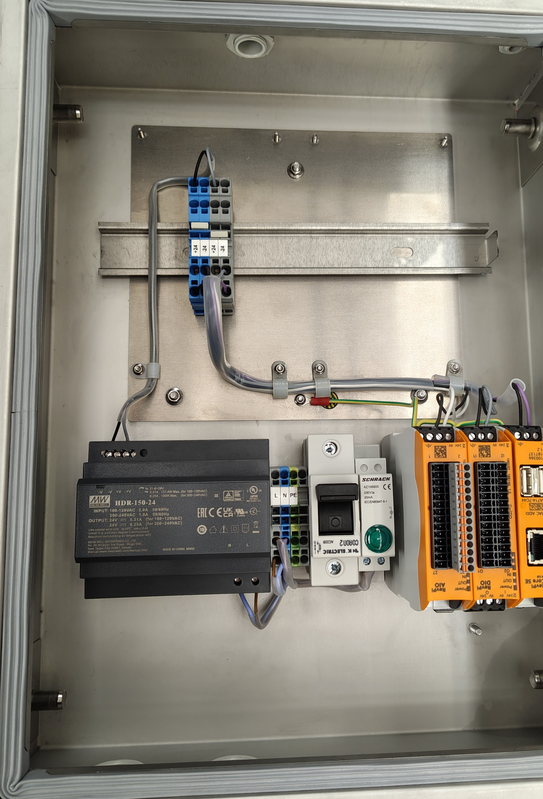
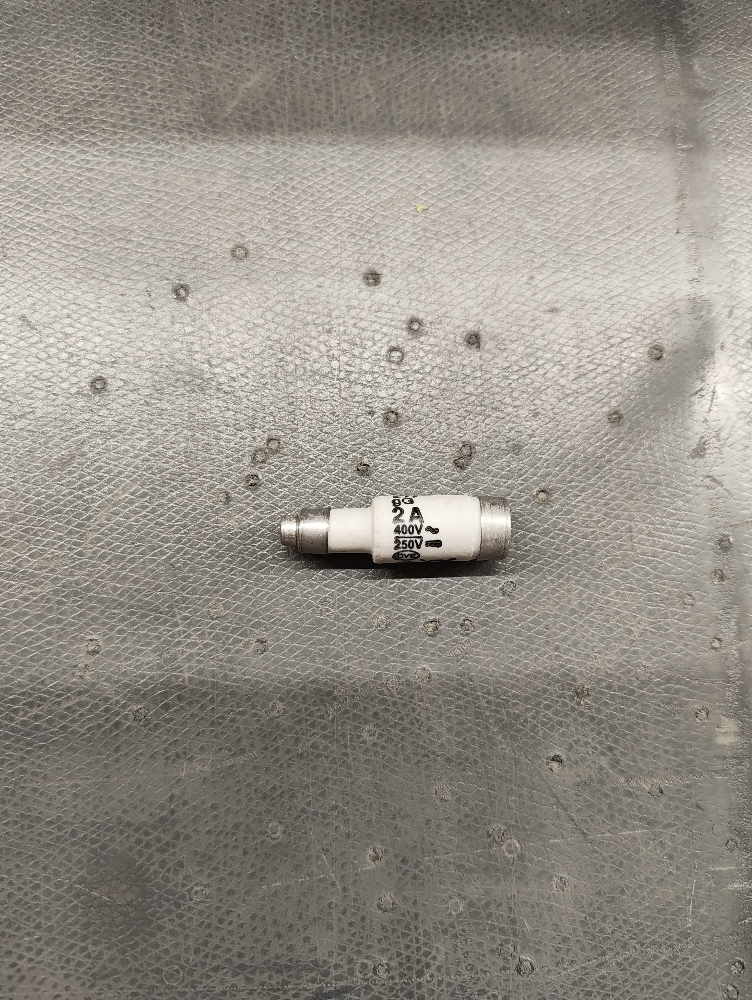
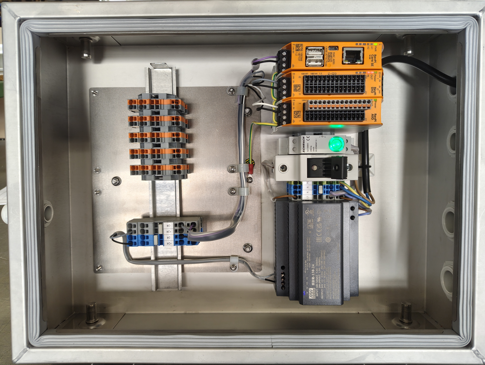

AI-Supported Test Box
Overview
This project documents the construction of a model for an AI-supported test box. The first work step focused on establishing a safe and clearly structured 24 V DC power supply for the RevPi Core SE, RevPi DIO, and RevPi AIO modules. The setup includes terminal connections, grounding, a load disconnect switch with fuse protection, and an LED indicator for voltage status.

The aim of the first work step was to connect the power supply unit to three modules connected in series—the RevPi Core SE, RevPi DIO, and RevPi AIO—via terminals shown in grey and blue. This ensures a 24 V DC power supply for each module. The RevPi modules are designed for a typical 24 V DC supply.
The modules were wired individually to the terminals so that they could be replaced easily if necessary. To make this possible, white jumpers were installed to connect the blue and grey terminals to one another. They ensure that the 24 V voltage supplied by the power supply unit is distributed across several cables. In addition, the modules were grounded, which can be recognised by the yellow and green colours. This serves as a safety measure and ensures that no hazardous voltage is present on the metal housing in the event of an insulation fault.
Furthermore, a load disconnect switch was installed, although it had not yet been connected to the circuit in picture 1. It allows the current flow to be controlled easily. It also contains a 2 A fuse element, which provides additional protection for the system against damage, as shown in picture 2.

If the fuse wire inside the fuse is subjected to a current that is significantly higher than 2 A, it begins to melt and thereby interrupts the circuit.
Finally, an LED indicator, connected to the power supply unit via the L and N terminals, was integrated into the circuit. Its purpose is to indicate that voltage is present during operation. The fact that no voltage is present in picture 1 and therefore no current is flowing can be recognised by the LED lamp not lighting up green.

Figure 3 shows the completed model, which is supplied with power via a 230 V mains connection cable connected to the circuit through the N and PE terminals. The green LED lamp serves as immediate proof of this. It can also be seen that all components, with the exception of the grey and orange terminals, are connected to the circuit. This also includes the load disconnect switch, which is connected to terminal L1.
The grey and orange terminals were mounted on the second DIN rail so that they can be used as connection points for sensors if required. Beforehand, an additional cable is connected to these terminals and wired to the connector strip of the RevPi AIO in order to establish a connection to the circuit. The RevPi AIO provides analogue inputs and outputs that can be used for sensor connections.